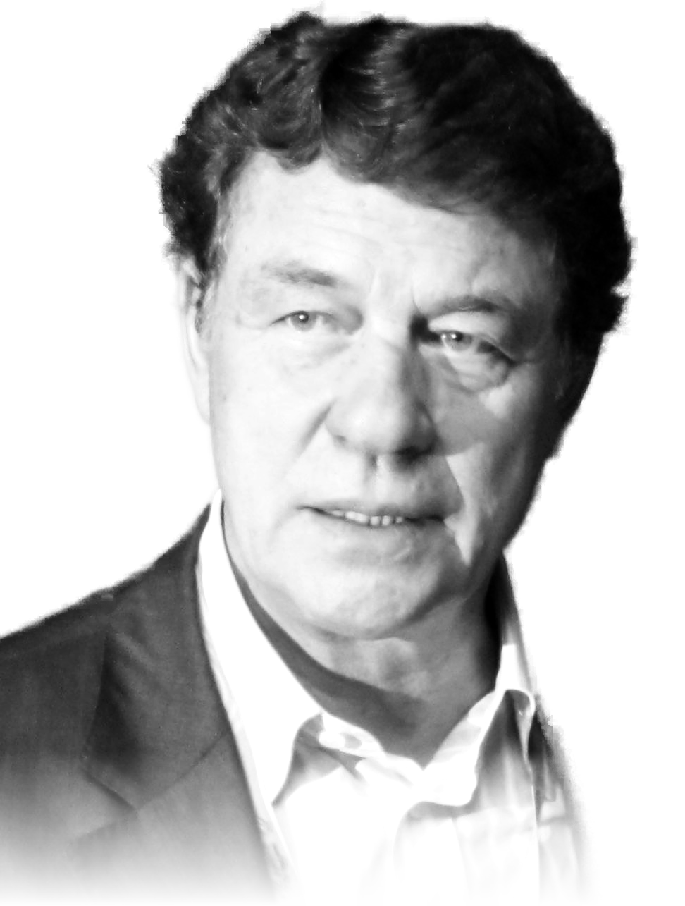
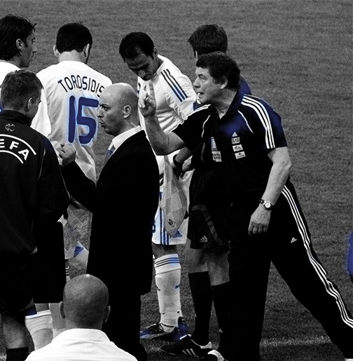
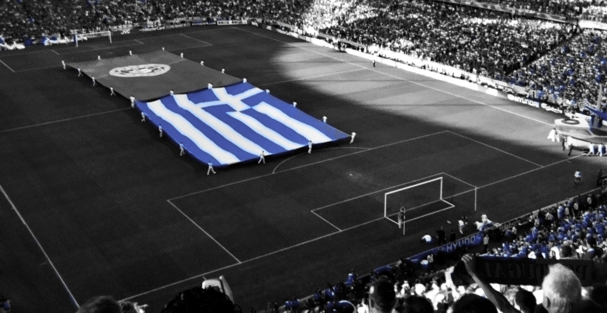

GRECIA · FASES FINALES · ARCHIVO
TORNEO
VICTORIAS
PARTIDOS GANADOS
0
FICHA: RECREACIÓN
UEFA.com · The Irish Times
BILLETE · RECREACIÓN
ALEMANIA → ATENAS
2001

SELECCIONADOR DE GRECIA · 2001–2010OTTO REHHAGEL
Foto: Jörg Zägel, 2010 · CC BY-SA 3.0

EN LA BANDA · 2008
Foto: Stelios Tsaousidis · dominio público
CUARTOS · 2004GRECIA – FRANCIA1-0
SEMIFINAL · 2004GRECIA – CHEQUIA1-0

LA FINAL · 2004
INAUGURALGRE – POR 2-1
FINALGRE – POR 1-0
Foto: Jarrett Campbell, 2004 · CC BY 2.0
ARCHIVO
4 JULIO 2004
CHARISTEAS MARCA EL 1-0 DE LA FINAL
PORTADA · RECREACIÓN
Foto: Fritz Duras, 2004 · CC BY-SA 3.0
Fotos: Jörg Zägel (CC BY-SA 3.0), Stelios Tsaousidis (dominio público),
Jarrett Campbell (CC BY 2.0) y Fritz Duras (CC BY-SA 3.0), modificadas,
vía Wikimedia Commons. Fichas, billete, pizarra y camiseta: recreación.